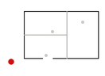
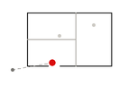
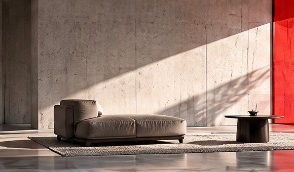
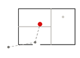
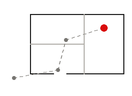

AN ADDRESS DESERVES A BUILDING.
YOUR DOMAIN TELLS PEOPLE WHERE TO FIND YOU. WHAT THEY FIND WHEN THEY ARRIVE IS ANOTHER MATTER ENTIRELY. BLDR IS WHERE SITE 00 WORKS THAT OUT WITH YOU.

MOST WEBSITES ARE PLANNED LIKE BROCHURES: A COVER, A FEW PAGES, A WAY TO GET IN TOUCH. WE PLAN THEM THE WAY AN ARCHITECT PLANS A BUILDING — STARTING WITH WHO ARRIVES, WHAT THEY CAME FOR, AND HOW IT SHOULD FEEL TO WALK IN.


FIRST, WHERE PEOPLE ARRIVE. A RESTAURANT'S FIRST SCREEN MIGHT BE A MENU AND A WAY TO FIND THE DOOR. A CONSULTANCY'S MIGHT BE ONE SENTENCE THAT EARNS THE NEXT. BLDR BEGINS BY WORKING OUT WHICH KIND OF ARRIVAL YOURS IS.


THEN, HOW IT FEELS ONCE THEY'RE IN. TYPE, COLOR, THE PACE OF A SCROLL, HOW MUCH SPACE SITS AROUND A SENTENCE. THESE ARE MATERIAL DECISIONS, AS MUCH AS MARBLE AND GLASS ARE, AND THEY SHAPE WHETHER SOMEONE TRUSTS YOU BEFORE THEY'VE READ A WORD.


AND THEN IT HAS TO WORK. INQUIRIES, APPOINTMENTS, ORDERS — WHATEVER YOUR BUSINESS RUNS ON, MOVING AT THE PACE YOUR CUSTOMERS EXPECT, AT YOUR OWN ADDRESS.

THREE DIRECTIONS, THEN YOUR DECISION.
ONCE YOU'VE TOLD BLDR ABOUT YOUR BUSINESS, IT PRODUCES THREE BLUEPRINT DIRECTIONS: THREE GENUINELY DIFFERENT WAYS YOUR LOCATION COULD BE ORGANIZED, LOOK, AND BEHAVE. YOU REVIEW ALL THREE AND CHOOSE THE ONE WORTH BUILDING.


NONE OF THIS ASKS ANYTHING OF YOU TODAY. BLDR IS OPEN TO WALK AROUND WHENEVER CURIOSITY GETS THE BETTER OF YOU.